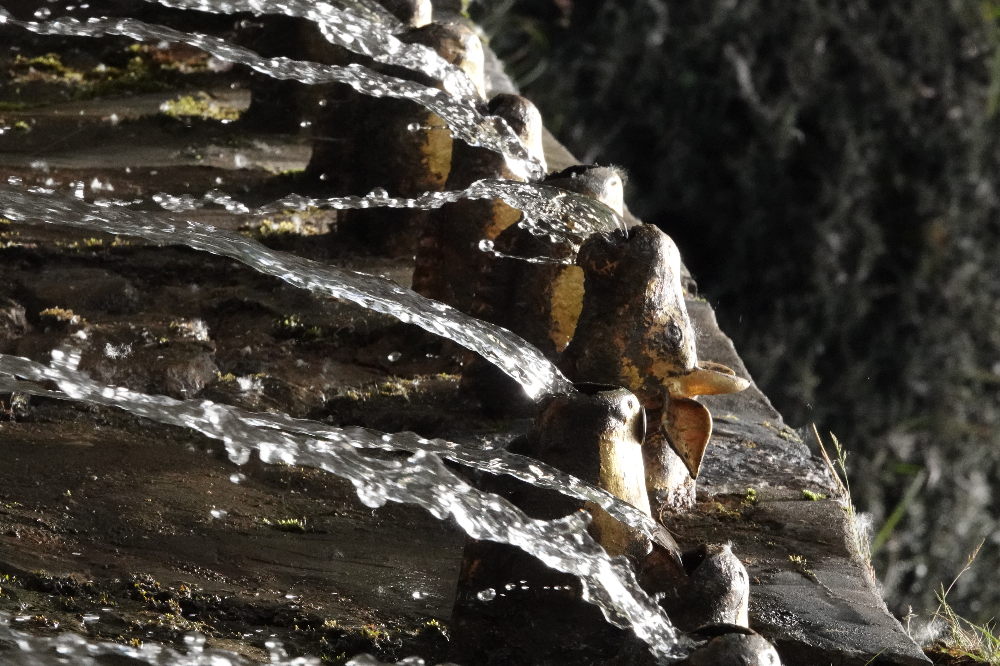
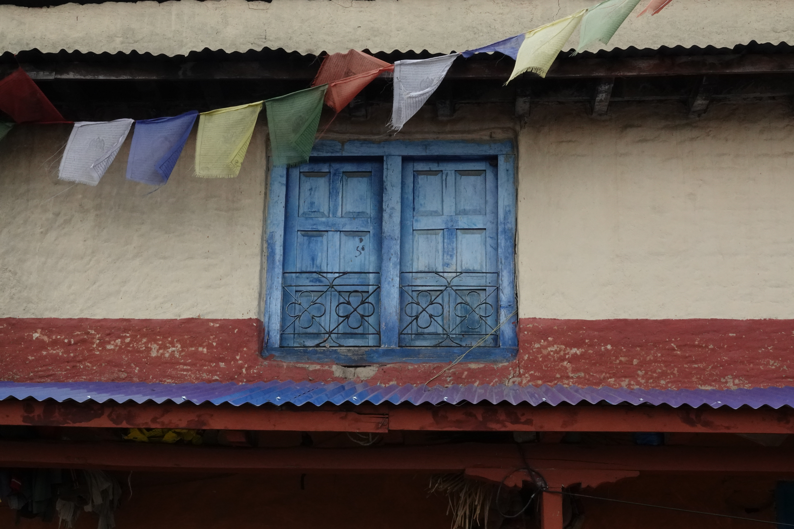
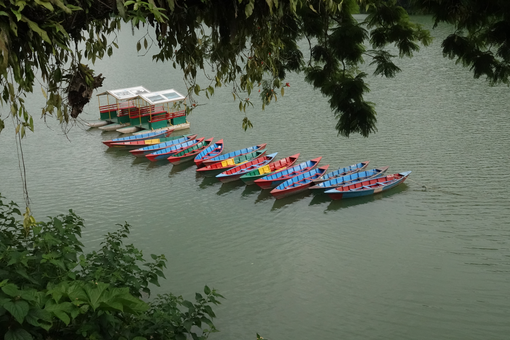
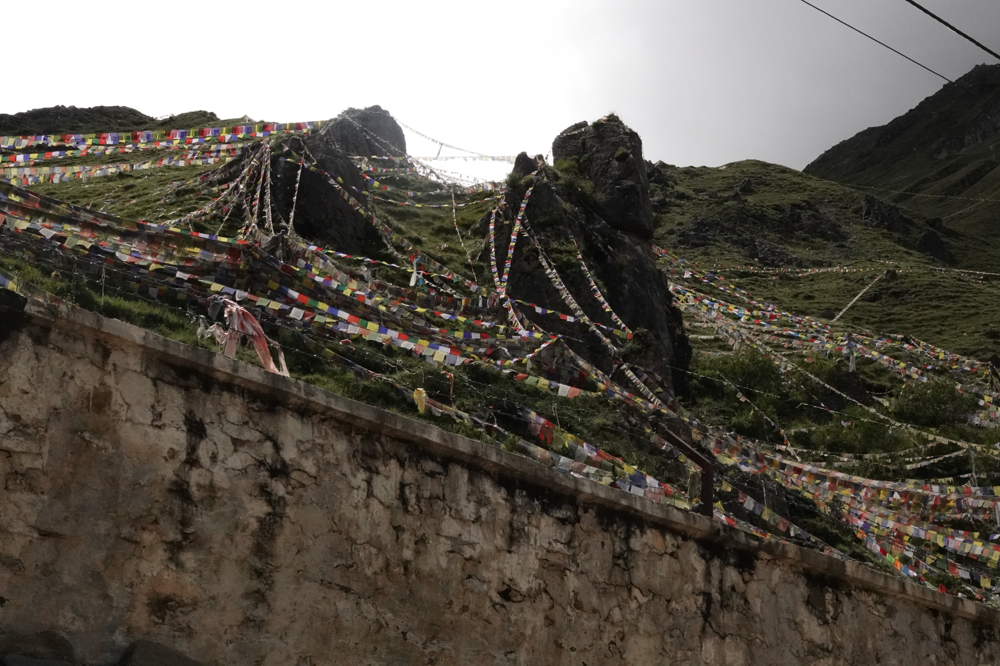

Here are some pictures from my trip to Nepal! I was there from June to August 2025, and mostly stayed in the Boudha area while I was studying at RYI. I also travelled a bit around Kathmandu, and at the end of my time there I took a trip to Pokhara and Lower Mustang, including Jomsom, Kagbeni, and Muktinath. A few of my favorite photos are below, but you can use the links above to see a few more pictures from some different places I visited!





